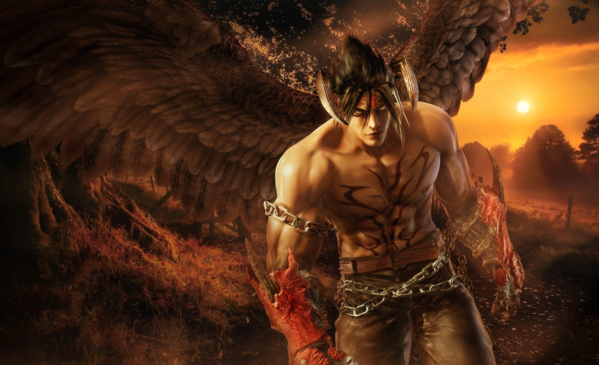
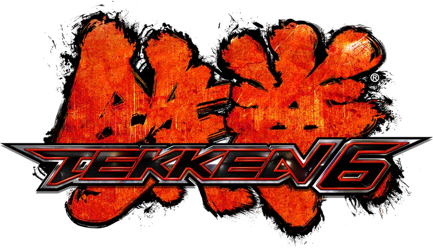

Tekken 6 plays on a computer: open this page on a desktop or a laptop, in Chrome, Edge or Firefox, with a keyboard or a gamepad.
A fan-made port of the PSP game. Not affiliated with Sony.
Tekken 6 plays on a computer: open this page on a desktop or a laptop, in Chrome, Edge or Firefox, with a keyboard or a gamepad.
A fan-made port of the PSP game. Not affiliated with Sony.
Choose your Tekken 6 (USA) ISO (ULUS-10466). The browser reads it right here: it is not sent anywhere.

A fan-made port: bring your own copy of the game.
Not affiliated with Sony.

Connecting…
Play now skips the rest: what is missing loads while you play, and the rest comes next time.
Kept in this browser, so the game never waits for the network.